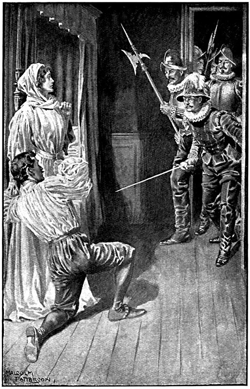

Дом, отведенный адмиралу, стоял, как мы сказали, на улице Бетизи. Он представлял собой большое здание в глубине двора, выходившее двумя крыльями на улицу. Ворота и две калитки в каменной ограде, отделявшей дом от улицы, вели во двор.
Когда три наших гизовца выбежали на улицу Бетизи, служившую продолжением улицы Фосе-Сен-Жермен-Л’Озеруа, они увидели, что дом адмирала окружен швейцарской стражей, солдатами и вооруженными горожанами. В руках у них мелькали пики, шпаги или аркебузы, а некоторые в свободной руке держали факелы и освещали эту сцену погребальным колеблющимся светом, который, следуя движениям факелоносцев, то падал на мостовую, то полз по стенам вверх, то пробегал по этому живому морю, где каждый предмет вооружения отсвечивал своим особым блеском. Вокруг, на близлежащих улицах – Тиршап, Этьен и Бертен-Пуаре, – свершалось страшное дело. Слышались пронзительные крики, громыхали выстрелы, и время от времени какой-нибудь несчастный гугенот, бледный, окровавленный, полуголый, большими прыжками, как преследуемая лань, вбегал в зловещий световой круг, где, точно демоны, метались люди.
Через минуту Коконнас, Морвель и Ла Юрьер, встреченные, по их белым крестам, громкими приветствиями, очутились в самой гуще толпы, тяжело дышавшей и тесно сомкнутой, как стая гончих. Они, конечно, не пробрались бы сквозь нее, но многие, узнав Морвеля, дали ему дорогу. Коконнас и Ла Юрьер протиснулись вслед за ним, и все трое очутились во дворе, так как ворота и две калитки были выломаны. Посреди двора стоял человек на пустом пространстве, почтительно освобожденном для него убийцами; он опирался на обнаженную рапиру и не сводил глаз с балкона, выступавшего перед стеклянной дверью в центре здания на высоте около пятнадцати футов от земли. Этот человек нетерпеливо притопывал ногой и время от времени оборачивался, чтобы задать вопрос стоявшим ближе к нему людям.
– Все нет! – сказал он. – Никого!.. Наверно, его предупредили, и он бежал. Дю Гаст, как думаете?
– Это невозможно, ваша светлость.
– Почему? Вы же мне сами говорили, что за минуту до нашего прихода какой-то человек без шляпы, с обнаженной шпагой в руке, бежавший точно от погони, постучал в ворота и его впустили.
– Верно, ваша светлость! Но почти сейчас же вслед за ним пришел Бэм, ворота были выломаны, а дом окружен. Человек действительно вошел, но выйти он не мог никак.
– Эге! Если не ошибаюсь, ведь это герцог Гиз? – спросил Коконнас мэтра Ла Юрьер.
– Он самый. Да, великий Генрих Гиз собственной персоной, и он, наверно, дожидается, когда выйдет адмирал, чтобы разделаться с ним так же, как адмирал разделался с его отцом. Каждому свой черед, а сегодня, слава богу, пришел наш.
– Эй! Бэм! Эй! – громко крикнул герцог. – Неужели еще не кончили?
И концом своей тоже нетерпеливой шпаги он высек искры из каменной мостовой двора.
В доме послышались какие-то крики, затем выстрелы, сильный топот и звяканье оружия. Потом все разом стихло.
Герцог рванулся к дому.
– Ваша светлость, ваша светлость! – сказал Дю Гаст, останавливая герцога. – Ваше достоинство требует, чтобы вы оставались здесь и ждали.
– Ты прав, Дю Гаст! Спасибо! Я подожду. Но, правду говоря, я умираю от нетерпения и беспокойства. А вдруг он улизнул!
Теперь топот ног в доме стал слышнее, и на оконных стеклах второго этажа заиграли красные отблески, как при пожаре.
Стеклянная дверь, не один раз привлекавшая взоры герцога, распахнулась или, вернее, разлетелась вдребезги, и на балконе появился человек; лицо его было бледно, шея залита кровью.
– Бэм! Наконец-то! – крикнул герцог. – Ну что? Что?
– Сдесь! Фот! Фот! – спокойно ответил немец, затем нагнулся, и через несколько секунд стал напряженно разгибаться, видимо, приподнимая какую-то большую тяжесть.
– А где остальные, где остальные? – нетерпеливо спросил герцог.
– Оздальные кончают оздальных.
– А ты что делаешь?
– Сейчас увидите; отойтить назат немношко.
Герцог сделал шаг назад.
В эту минуту стало видно и то, что немец с таким усилием подтягивал к себе.
Это было тело старика.
Бэм поднял его над перилами балкона, раскачал в воздухе и бросил к ногам своего хозяина.
Глухой звук падения, кровь, хлынувшая из тела и широко обрызгавшая мостовую, ужаснули всех, не исключая герцога, но чувство ужаса длилось недолго, уступив место любопытству – все присутствующие подались на несколько шагов вперед, и дрожащий свет факела упал на жертву. Стали видны и седая борода, и строгое почтенное лицо, и руки, застывшие в смертной неподвижности.
– Адмирал! – вскрикнули разом двадцать голосов и разом смолкли.
– Да, адмирал, это он! – сказал герцог, подойдя к телу и с затаенной радостью разглядывая своего врага.
– Адмирал! Адмирал! – вполголоса повторяли свидетели этой жуткой сцены, сбившись в кучу и робко приближаясь к великому поверженному старцу.
– Ага, Гаспар! Вот ты наконец! – торжествующе произнес герцог Гиз. – Ты велел убить моего отца, теперь я мщу тебе!
И он дерзко поставил ногу на грудь протестантского героя.
В тот же миг глаза умирающего с трудом открылись, простреленная, залитая кровью рука его сжалась в последний раз, и, оставаясь все так же недвижимым, адмирал ответил замогильным голосом:
– Генрих Гиз, настанет час, когда и ты почувствуешь на своей груди ногу твоего убийцы. Я не убивал твоего отца. Будь проклят!
Герцог вздрогнул, побледнел, и ледяной холодок пробежал по его телу. Он провел рукой по лбу, как бы отгоняя от себя мрачное видение, затем опустил руку и решился еще раз взглянуть на адмирала, но глаза убитого уже закрылись, рука лежала неподвижно, а вместо ужасных слов изо рта хлынула черная кровь, заливая седую бороду.
Герцог с какой-то отчаянной решимостью взмахнул шпагой.
– Итак, монсир, фы доволен? – спросил его Бэм.
– Да, да, мой храбрый Бэм! – ответил Гиз. – Ты отомстил…
– За херцог Франсуа, да?
– За религию, – упавшим голосом ответил Гиз. – А теперь, – продолжал он, обращаясь к швейцарцам, солдатам и горожанам, заполнившим улицу и двор, – за дело, друзья мои, за дело!
– Здравствуйте, месье Бэм, – сказал Коконнас, с чувством восхищения подходя к немцу, все еще стоявшему на балконе и спокойно вытиравшему свою шпагу.
– Так это вы спровадили его на тот свет? – восторженно крикнул ему Ла Юрьер. – Как это удалось вам, достопочтенный месье Бэм?
– О-о! Ошень просто, ошень просто! Он слыхал шум, отворял свой тверь, я протыкал его мой рапир. Но это еще не все, я думай, Телиньи еще стоит за себя, я слышу, как он кричит.
Действительно, в эту минуту донесся из дома отчаянный, как будто женский вопль. Показались фигуры двух бежавших мужчин, которых преследовала целая вереница убийц. Одного мужчину убили выстрелом из аркебузы; другой добежал до открытого окна и, не обращая внимания ни на высоту, ни на врагов, ждавших его внизу, бесстрашно прыгнул во двор.
– Бей! Бей! – закричали преследователи, видя, что жертва может ускользнуть.
Прыгнувший человек поднялся на ноги, подобрал шпагу, выпавшую у него из рук при падении, бросился стремглав сквозь толпу, сбил трех или четырех с ног, проткнул кого-то шпагой и среди треска пистолетных выстрелов и ругани промахнувшихся по нему солдат мелькнул как молния мимо Коконнаса, с кинжалом в руке поджидавшего у ворот.
– Есть! – крикнул пьемонтец, проколов беглецу предплечье тонким, острым клинком кинжала.
В узком пролете ворот невозможно было колоть шпагой, и бежавший человек только хлестнул клинком по лицу врага, крикнув ему:
– Подлец!
– Тысяча чертей! Месье де Ла Моль! – воскликнул Коконнас.
– Месье де Ла Моль! – повторили Морвель и Ла Юрьер.
– Он и предупредил адмирала! – закричали несколько солдат.
– Бей! Бей! – вопили со всех сторон.
Коконнас, Ла Юрьер и человек десять солдат бросились за Ла Молем, а он, покрытый кровью, охваченный тем возбуждением, которое доводит до предела жизненные силы человека, мчался по улицам, руководясь одним инстинктом. Топот ног и крики гнавшихся за ним врагов подстегивали и как бы окрыляли беглеца. Минутами ему хотелось бежать тише, но свистнувшая рядом пуля вновь заставила его ускорить бег. Он уже не просто вдыхал и выдыхал воздух, а из его груди вырывались глухое клокотание и хриплый свист. Капли крови, сочившейся из головы, смешивались с потом и заливали его красивое лицо. Узкий колет все больше стеснял биение сердца – Ла Моль сорвал с себя колет и бросил. Вскоре и шпага оказалась слишком тяжелой для его руки – он отшвырнул и шпагу. Порой казалось, что топот врагов его как будто отдалялся и что ему удастся уйти от этих палачей, но крики их долетали до других убийц, находившихся поблизости, и, бросив свою кровавую работу, они бежали вслед за ним. Наконец слева от себя Ла Моль увидел спокойно текущую реку и вдруг почувствовал, что если он бросится в нее, как загнанный олень, то испытает неизъяснимое блаженство, и только крайним напряжением ума и воли он удержал себя от этого. А справа возвышался Лувр, мрачный, неколебимый, но полный глухих, зловещих звуков. Через подъемный мост взад и вперед сновали люди в шлемах, латах, сверкавших холодным отблеском луны. Ла Моль подумал о короле Наваррском, так же как он подумал и о Колиньи, – своих двух верных покровителях. Он собрал остатки сил, взглянул на небо, давая про себя обет стать католиком, если спасется, уловкой выиграл шагов тридцать расстояния у гнавшей его стаи, свернул к Лувру, бросился на подъемный мост, смешался с кучей солдат, получил новый удар кинжалом, скользнувшим, к счастью, лишь по ребрам, и, несмотря на крики «Бей! Бей!», раздававшиеся со всех сторон, несмотря на готовых к бою часовых, стрелой промчался во двор Лувра, прыгнул в подъезд, взбежал по лестнице на третий этаж и, прислонившись к знакомой ему двери, начал стучать в нее руками и ногами.
– Кто там? – тихо спросил женский голос.
Ла Моль вспомнил пароль и крикнул:
– Наварра! Наварра!
Дверь тотчас отворилась. Ла Моль, не благодаря и даже не заметив Жийону, ворвался в вестибюль, пробежал коридор, две или три комнаты и попал в спальню, освещенную лампой, свисавшей с потолка.
В кровати из резного дуба за бархатным, расшитым золотыми лилиями пологом лежала полуобнаженная женщина и, опершись на локоть, смотрела на него расширенными от ужаса глазами.
Ла Моль подбежал к лежавшей даме:
– Мадам! Там бьют, там режут моих собратьев! Они хотят зарезать и меня… Ах! Вы королева… спасите же меня!
Он бросился к ее ногам, оставив на ковре широкий кровавый след.
Видя перед собою человека на коленях, растерзанного, бледного, королева Наваррская приподнялась и, в страхе закрыв лицо руками, начала звать на помощь.
– Мадам, во имя бога, не зовите! – говорил Ла Моль, пытаясь встать. – Если вас услышат, я пропал! Убийцы гнались за мной уже по лестнице. Я их слышу… вот они! Вот!
– На помощь! – кричала королева Наваррская вне себя. – На помощь!
– Ах! Вы убиваете меня! – с отчаянием сказал Ла Моль. – Умирать от звука такого чарующего голоса, умирать от такой прекрасной руки! О! Не думал я, что это может быть!
В ту же минуту дверь отворилась, и толпа людей, запыхавшихся, разъяренных, с лицами, испачканными порохом и кровью, со шпагами, аркебузами и алебардами, ворвалась в комнату. Во главе их – Коконнас, с рыжими всклокоченными волосами, с расширенными неестественно глазами и кровавым рубцом во всю щеку, нанесенным шпагою Ла Моля, – пьемонтец был просто страшен в таком виде.
– Дьявольщина! Вот он, вот он! А-а, наконец-то попался! – кричал Коконнас.
Ла Моль попытался найти какое-нибудь оружие, но безуспешно. Он посмотрел на королеву и на лице ее заметил выражение глубокой жалости. Тогда он понял, что только она одна могла б его спасти, метнулся к ней и обнял ее.
Коконнас выступил на три шага вперед и концом длинной рапиры нанес вторую рану в правое плечо своему врагу; несколько капель красной теплой крови оросили белые душистые простыни на постели наваррской королевы.
Маргарита, увидев кровь и чувствуя содрогания прижавшегося к ней человека, бросилась вместе с ним в проход между кроватью и стеной. И вовремя: Ла Моль совершенно изнемог, он был не в состоянии сделать шага – ни для того, чтобы бежать, ни для того, чтобы защищаться. Он склонил голову на плечо молодой женщины и судорожно цеплялся за нее пальцами, раздирая тонкий вышитый батист, облекавший, точно волнистым газом, тело Маргариты.
– Мадам! Спасите! – пролепетал он замирающим голосом.
Больше сказать он ничего уже не мог. Взор его затуманился, будто подернутый предсмертной дымкой, голова бессильно запрокинулась назад, руки разжались, ноги подогнулись, и он упал на пол в лужу своей крови, увлекая вслед за собой и королеву.
Коконнас, возбужденный криками, опьяненный запахом крови, ожесточенный горячей долгой травлей, протянул руку к королевскому алькову. Одно мгновение – и он пронзил бы сердце Ла Моля, а может быть, и сердце королевы.
При виде обнаженного клинка, а еще больше при виде этой невероятной наглости дочь французских королей выпрямилась во весь свой рост и вскрикнула, но в этом страшном крике было столько негодования и яростного гнева, что пьемонтец застыл на месте под властью неведомого ему чувства. Конечно, если б эта сцена продлилась в составе тех же действующих лиц, то и его чувство растаяло бы так же быстро, как снег в апреле под лучами солнца.
Но дверь, скрытая в стене, вдруг распахнулась, и в комнату вбежал юноша лет семнадцати, бледный, с растрепанной прической, одетый в черное.
– Сестра, не бойся, не бойся! Я здесь! Я здесь! – крикнул он.
– Франсуа! Франсуа! На помощь! – закричала Маргарита.
– Герцог Алансонский! – прошептал Ла Юрьер, опуская аркебузу.
– Дьявольщина! Брат короля! – пробурчал Коконнас, отступая.
Герцог Алансонский поглядел вокруг.
Маргарита с распущенными волосами, более красивая, чем обычно, стояла, прислонясь к стене, одна среди мужчин, а в их глазах светилась ярость, по лбу струился пот, и губы покрывала пена.
– Мерзавцы! – крикнул герцог.
– Спасите меня, брат! – сказала Маргарита, теряя силы. – Они хотят меня убить.
Бледное лицо герцога вдруг вспыхнуло. С ним не было оружия, но, полагаясь на свое звание, он, судорожно сжав кулаки, стал наступать на Коконнаса и его товарищей, а они в страхе отступали перед его сверкавшими как молнии глазами.
– Может быть, вы убьете и брата короля? Ну-ка!
Они продолжали отступать.
– Эй, капитан моей охраны! – крикнул он. – Сюда! И перевешайте всех этих разбойников!
Испуганный гораздо больше видом этого безоружного юноши, чем целым отрядом рейтаров или ландскнехтов, Коконнас уже допятился до двери. Ла Юрьер с быстротой оленя умчался вниз по лестнице, а солдаты теснились и толкались в вестибюле, так как размеры двери не соответствовали их страстному желанию покинуть поскорее стены Лувра.

Маргарита инстинктивно набросила на молодого человека, лежавшего без чувств, свое камчатное одеяло и отошла прочь.
Когда последний убийца исчез за дверью, герцог Алансонский обернулся и, увидев, что вся одежда Маргариты в кровавых пятнах, воскликнул:
– Сестра, ты ранена?
Он кинулся к сестре с такой тревогой, какая сделала бы честь братской его нежности, если бы в этом порыве не сказывалось чувство сильнее братского.
– Нет, не думаю, – ответила сестра, – а если и ранена, то легко.
– Но на тебе кровь, – говорил герцог, ощупывая дрожащими руками тело Маргариты, – откуда же она?
– Не знаю. Один из этих негодяев схватил меня – возможно, он был ранен.
– Схватить мою сестру! – воскликнул герцог. – О, если бы ты указала мне его, если бы ты сказала мне, какой он из себя, – лишь бы мне его найти!
– Тс! – произнесла Маргарита.
– Почему? – спросил Франсуа.
– А потому что, если вас увидят в этой комнате и в такой час…
– Разве брат не может зайти к своей сестре?
Королева взглянула на герцога Алансонского таким твердым и грозным взглядом, что юноша отошел подальше.
– Да, да, Маргарита, ты права, лучше я пойду к себе. Но тебе нельзя оставаться одной в такую ночь. Хочешь, я позову Жийону?
– Нет, нет, не надо никого. Ступай, Франсуа, ступай тем же ходом, каким пришел.
Юный принц вышел. Едва успела закрыться за ним дверь, как в проходе за кроватью раздался вздох. Маргарита кинулась к потайной двери, заперла ее на засов, затем побежала к входной двери и заперла ее в ту самую минуту, когда по другому концу коридора несся как ураган большой отряд стрелков, преследуя гугенотов, живших в Лувре.
Королева пристально оглядела все кругом и, убедившись, что она действительно одна, вернулась к проходу за своей кроватью, положила на место камчатное одеяло, скрывшее Ла Моля от глаз герцога Алансонского, с трудом вытащила бессильное тело на середину комнаты. Заметив, что бедняга еще дышит, она присела на пол, положила голову молодого человека себе на колени и плеснула ему водой в лицо, чтобы привести в чувство.
Вода очистила лицо раненого от слоя пыли, пороховой копоти и крови, и только теперь Маргарита узнала в нем того красивого дворянина, который, полный жизни и надежд, три или четыре часа тому назад явился к ней просить ее посредничества перед королем Наваррским и расстался с ней, ослепленный ее красотой, да и на нее произвел большое впечатление.
Маргарита вскрикнула от страха за него, чувствуя теперь к нему не только сострадание, но и участие; для нее он стал не просто какой-то человек, а почти знакомый. Под ее заботливой рукой сделалось чистым красивое, но бледное, истомленное страданием лицо Ла Моля.
Маргарита, замирая от боязни, почти такая же бледная, как он, приложила руку к его сердцу – оно еще билось; тогда она протянула руку к стоявшему рядом столику, взяла флакончик с нюхательной солью и дала ее понюхать Ла Молю.
Ла Моль открыл глаза.
– О господи! – прошептал он. – Где я?
– Вы спасены! Успокойтесь! – ответила Маргарита.
Ла Моль с трудом перевел глаза на королеву и, поглядев на нее восхищенным взглядом, чуть слышно произнес:
– Какая вы красавица!
Молодой человек, точно ослепленный, сразу опустил веки, тяжело вздохнул и побледнел как будто больше прежнего. Маргарита тихо вскрикнула, думая, что это был его последний вздох.
– Боже, боже, сжалься над ним! – сказала она.
В эту минуту раздался сильный стук в дверь из коридора. Маргарита слегка приподнялась, продолжая поддерживать за плечи Ла Моля.
– Кто там? – крикнула она.
– Мадам, мадам, это я, я! – ответил женский голос. – Я, герцогиня Невэрская.
– Анриетта! – воскликнула королева. – Это не опасно, это друг, вы слышите, месье?
Ла Моль сделал усилие и приподнялся на одно колено.
– Постарайтесь не упасть, покамест я отворю дверь, – сказала королева.
Ла Моль оперся рукой о пол, чтоб удержаться в равновесии.
Маргарита пошла было к двери, но вдруг остановилась, задрожав от страха.
– Так ты не одна? – воскликнула она, услыхав звяканье оружия.
– Нет, со мной двенадцать человек охраны; мне дал их мой деверь, герцог Гиз.
– Герцог Гиз! – прошептал Ла Моль. – О! Убийца! Убийца!
– Тс! Ни слова! – сказала Маргарита и поглядела вокруг себя, придумывая, куда бы спрятать раненого.
– Шпагу!.. Кинжал! – шептал Ла Моль.
– Для защиты? Это бесполезно; разве вы не слышали, что их двенадцать, а вы – один!
– Не для защиты, а чтобы не даться живым им в руки.
– Нет, нет, я вас спасу, – сказала Маргарита. – Да… кабинет! Идем, идем!
Ла Моль напряг все силы и при поддержке Маргариты дотащился до кабинета. Маргарита заперла за ним дверь и спрятала ключ в свой кошелек.
– Ни крика, ни стона, ни вздоха – и вы спасены! – сказала она ему сквозь дверь.
Затем она набросила на плечи ночной халат, открыла дверь своей подруге, и обе бросились в объятия друг к другу.
– Мадам, с вами не приключилось ничего плохого? – спросила герцогиня Невэрская.
– Нет, ничего, – ответила Маргарита, запахнув свой халат, чтобы не видно было следов крови на пеньюаре.
– Тем лучше! Но герцог Гиз отрядил двенадцать телохранителей, чтобы проводить меня до его дома, а мне такая большая свита не нужна, и я оставлю шестерых вам, на всякий случай. В такую ночь шесть телохранителей герцога Гиза стоят целого полка королевской гвардии.
Маргарита не решилась отказаться: она расставила шестерых телохранителей по коридору, расцеловалась с герцогиней, а герцогиня в сопровождении других шести отправилась в дом Гиза, где она жила, пока был в отъезде ее муж.